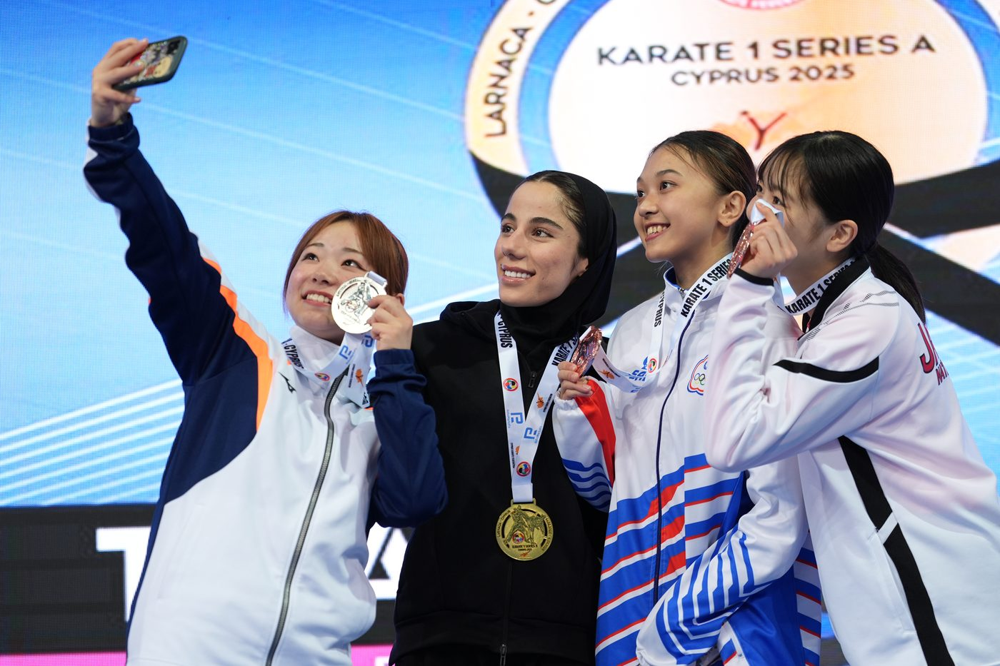
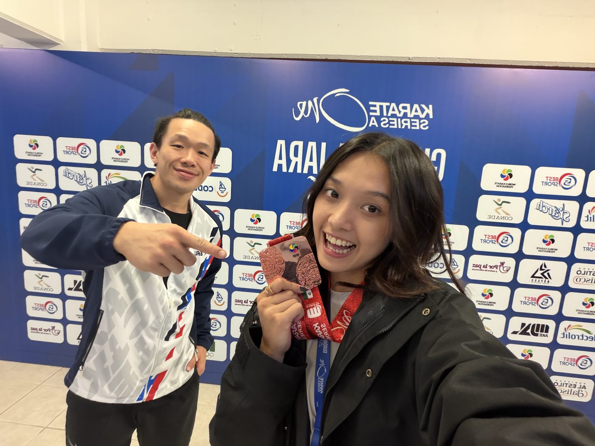

01我的故事
跌倒兩次，站起來第三次
國一那年，我第一次接觸空手道。從最初的好奇與興趣，到後來把空手道變成生活的一部分，我將近十年的青春都投入在訓練場與比賽場上。
和許多運動員一樣，我曾經以為只要努力訓練，就能一步一步接近夢想。然而在高三全中運前，我遭遇了運動生涯中的重大打擊，前十字韌帶斷裂。
對我來說，這不只是一次受傷，而是對未來的考驗。全中運結束後，我立即接受手術，並開始漫長的復健生活。每週三次的復健課程、無數次重複的訓練動作，以及對未來的不確定感，都曾讓我感到挫折。但我知道，如果想繼續站上賽場，就必須撐過這段過程。
經過努力，我成功銜接大學競技生涯，並在大二入選國家隊。然而命運再次給了我挑戰，在追求更高競技成績的路上，我又經歷了第二次前十字韌帶斷裂。
第二次受傷比第一次更令人害怕，因為我知道復健有多漫長，也知道重返賽場需要付出多少代價。但正因為經歷過，我更明白自己有多想證明自己。於是我再次選擇接受挑戰，重新開始。

